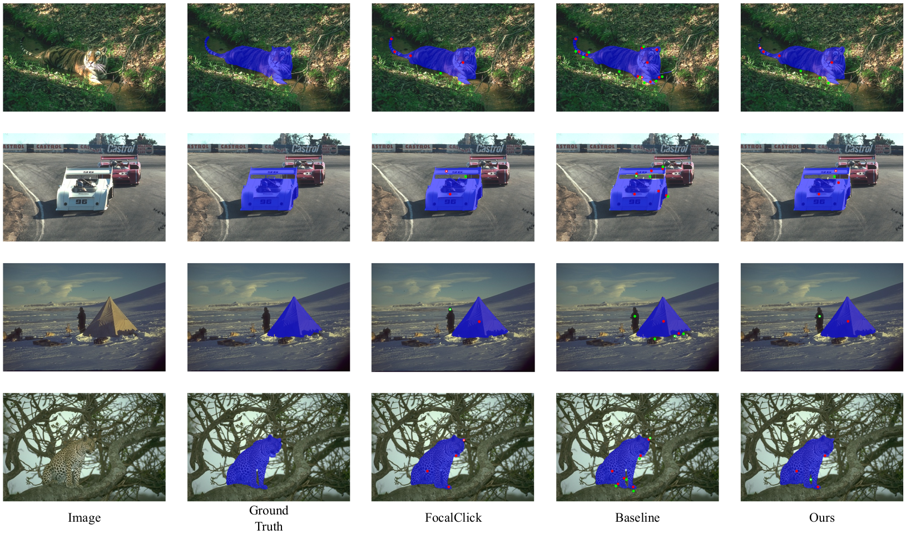
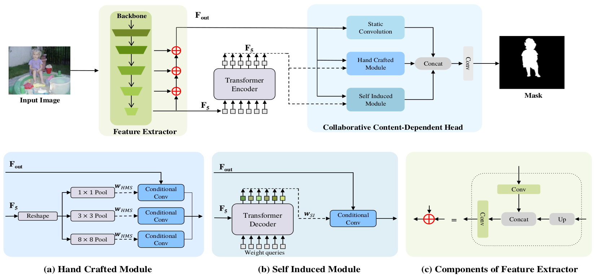
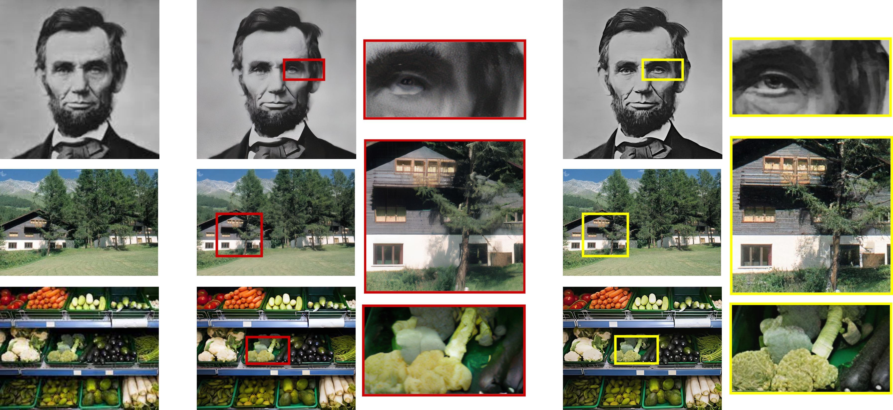

Levon Khachatryan
I am a senior machine learning researcher specializing in computer vision, with expertise in generative modeling, segmentation and classical computer vision. Currently driving innovation at Picsart, where I contribute to groundbreaking projects in image and video domains. Additionally, I share my knowledge and expertise as a Computer Vision Lecturer in the Applied Statistics and Data Science Master’s program at Yerevan State University, while also supervising master’s theses for students.
My current research focuses on Generative AI in Computer Vision, particularly I am recently working on:
- Image/Video Generation
- Controllable Image/Video Editing
Publications

StreamingT2V: Consistent, Dynamic, and Extendable Long Video Generation from Text
Roberto Henschel*, Levon Khachatryan*, Daniil Hayrapetyan*, Hayk Poghosyan, Vahram Tadevosyan, Zhangyang Wang, Shant Navasardyan, Humphrey Shi,
arXiv.org (under review) , 2024
Project Page / Code / Hugging Face / Video /
Roberto Henschel*, Levon Khachatryan*, Daniil Hayrapetyan*, Hayk Poghosyan, Vahram Tadevosyan, Zhangyang Wang, Shant Navasardyan, Humphrey Shi,
arXiv.org (under review) , 2024
Project Page / Code / Hugging Face / Video /
@article{streamingt2v,
title={StreamingT2V: Consistent, Dynamic, and Extendable Long Video Generation from Text},
author={Henschel, Roberto and Khachatryan, Levon and Hayrapetyan, Daniil and Poghosyan, Hayk and Tadevosyan, Vahram and Wang, Zhangyang and Navasardyan, Shant and Shi, Humphrey},
journal={arXiv preprint arXiv:2403.14773},
year={2024}
}

Continuous Adaptation for Interactive Segmentation Using Teacher-Student Architecture
Barsegh Atanyan, Levon Khachatryan, Shant Navasardyan, Yunchao Wei, Humphrey Shi,
Proc. of the IEEE/CVF Winter Conference on Applications of Computer Vision (WACV) , 2024
Supplemental /
Barsegh Atanyan, Levon Khachatryan, Shant Navasardyan, Yunchao Wei, Humphrey Shi,
Proc. of the IEEE/CVF Winter Conference on Applications of Computer Vision (WACV) , 2024
Supplemental /
@InProceedings{Atanyan_2024_WACV,
author = {Atanyan, Barsegh and Khachatryan, Levon and Navasardyan, Shant and Wei, Yunchao and Shi, Humphrey},
title = {Continuous Adaptation for Interactive Segmentation Using Teacher-Student Architecture},
booktitle = {Proceedings of the IEEE/CVF Winter Conference on Applications of Computer Vision (WACV)},
month = {January},
year = {2024},
pages = {789-799}
}

Text2Video-Zero: Text-to-Image Diffusion Models are Zero-Shot Video Generators
Levon Khachatryan*, Andranik Movsisyan*, Vahram Tadevosyan*, Roberto Henschel*, Zhangyang Wang, Shant Navasardyan, Humphrey Shi,
Proc. of the IEEE/CVF International Conference on Computer Vision (ICCV Oral), 2023
Project Page / Code / Hugging Face / Video /
Levon Khachatryan*, Andranik Movsisyan*, Vahram Tadevosyan*, Roberto Henschel*, Zhangyang Wang, Shant Navasardyan, Humphrey Shi,
Proc. of the IEEE/CVF International Conference on Computer Vision (ICCV Oral), 2023
Project Page / Code / Hugging Face / Video /
@article{text2video-zero,
title={Text2Video-Zero: Text-to-Image Diffusion Models are Zero-Shot Video Generators},
author={Khachatryan, Levon and Movsisyan, Andranik and Tadevosyan, Vahram and Henschel, Roberto and Wang, Zhangyang and Navasardyan, Shant and Shi, Humphrey},
journal={arXiv preprint arXiv:2303.13439},
year={2023}
}

FaceCLIP: Facial Image-to-Video Translation via A Brief Text Description
Jiayi Guo, Hayk Manukyan, Chenyu Yang, Chaofei Wang, Levon Khachatryan, Shant Navasardyan, Shiji Song, Humphrey Shi, Gao Huang,
IEEE Transactions on Circuits and Systems for Video Technology (TCSVT), 2023
Jiayi Guo, Hayk Manukyan, Chenyu Yang, Chaofei Wang, Levon Khachatryan, Shant Navasardyan, Shiji Song, Humphrey Shi, Gao Huang,
IEEE Transactions on Circuits and Systems for Video Technology (TCSVT), 2023
@ARTICLE{10310257,
author={Guo, Jiayi and Manukyan, Hayk and Yang, Chenyu and Wang, Chaofei and Khachatryan, Levon and Navasardyan, Shant and Song, Shiji and Shi, Humphrey and Huang, Gao},
journal={IEEE Transactions on Circuits and Systems for Video Technology},
title={FaceCLIP: Facial Image-to-Video Translation via A Brief Text Description},
year={2023},
volume={},
number={},
pages={1-1},
keywords={Task analysis;Training;Faces;Solid modeling;Three-dimensional displays;Image synthesis;Image reconstruction;autoencoder;CLIP;facial video generation;image-to-video translation;text-guided;transformer},
doi={10.1109/TCSVT.2023.3330920}
}

Collaborative content-dependent modeling: A return to the roots of salient object detection
Siyu Jiao, Vidit Goel, Shant Navasardyan, Zongxin Yang, Levon Khachatryan, Yi Yang, Yunchao Wei, Yao Zhao, Humphrey Shi,
IEEE Transactions on Image Processing (TIP), 2023
Siyu Jiao, Vidit Goel, Shant Navasardyan, Zongxin Yang, Levon Khachatryan, Yi Yang, Yunchao Wei, Yao Zhao, Humphrey Shi,
IEEE Transactions on Image Processing (TIP), 2023
@ARTICLE{10183835,
author={Jiao, Siyu and Goel, Vidit and Navasardyan, Shant and Yang, Zongxin and Khachatryan, Levon and Yang, Yi and Wei, Yunchao and Zhao, Yao and Shi, Humphrey},
journal={IEEE Transactions on Image Processing},
title={Collaborative Content-Dependent Modeling: A Return to the Roots of Salient Object Detection},
year={2023},
volume={32},
number={},
pages={4237-4246},
keywords={Convolution;Task analysis;Head;Feature extraction;Decoding;Transformers;Object detection;Salient object detection;content-dependent modeling},
doi={10.1109/TIP.2023.3293759}
}
Selected Recent Student Theses

StyleT2V0: Zero-Shot Short Video Generation Guided by Text and Style
Astghik Chobanyan, Levon Khachatryan
Astghik Chobanyan, Levon Khachatryan

DynamicImportance: Interactive Assignment of Word Significance in a Generalist Vision Model
Meri Topuzyan, Levon Khachatryan
Meri Topuzyan, Levon Khachatryan

EdgeSR: Image Super-Resolution Using Edge-Guided Diffusion Models
Armine Panosyan, Levon Khachatryan
Armine Panosyan, Levon Khachatryan